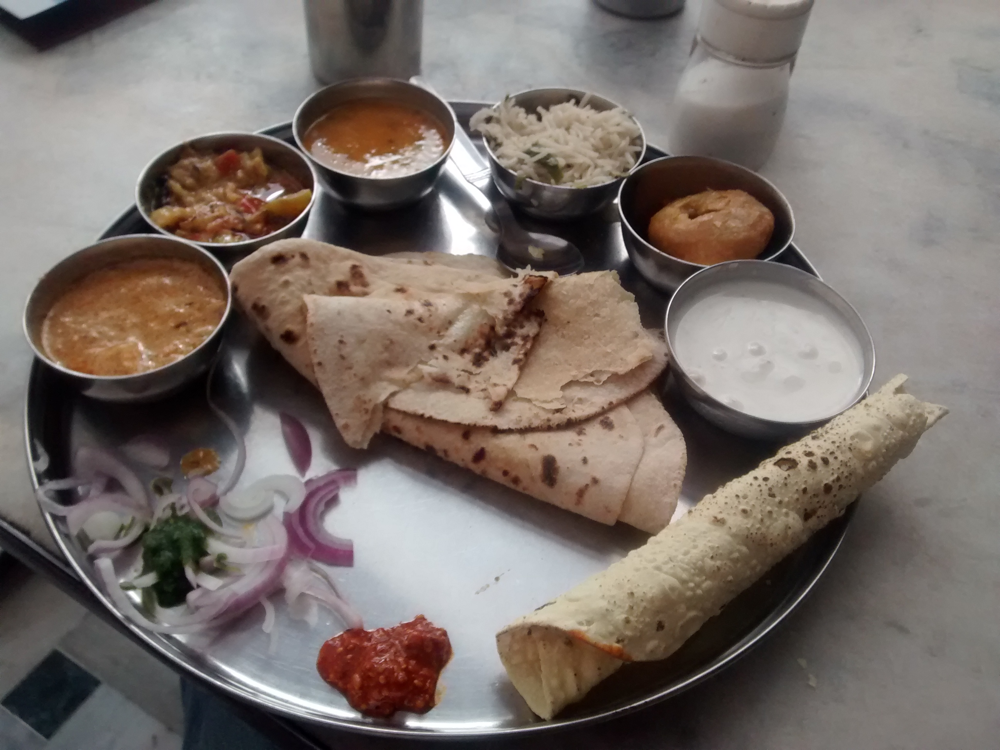
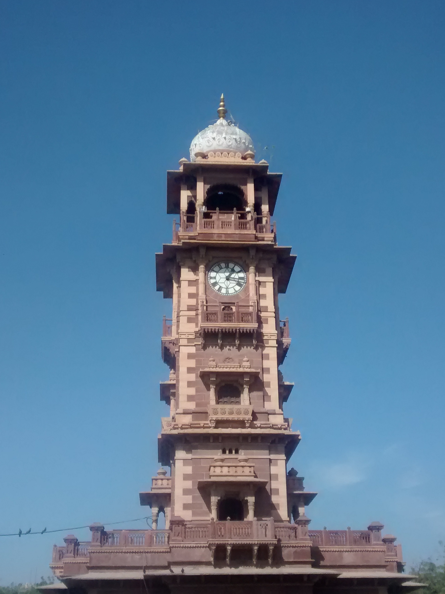
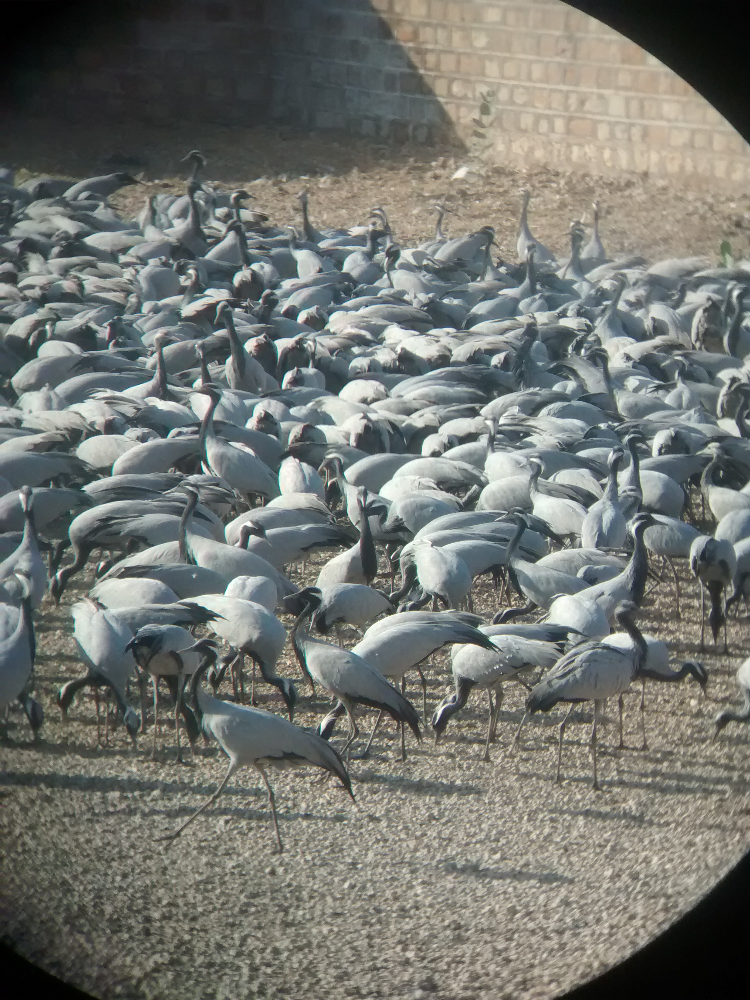
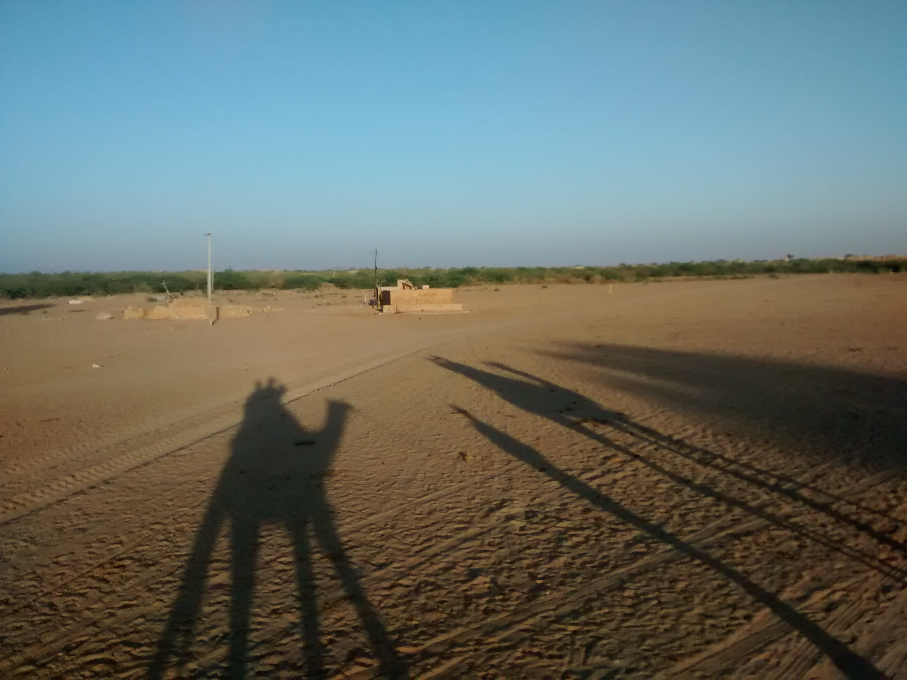
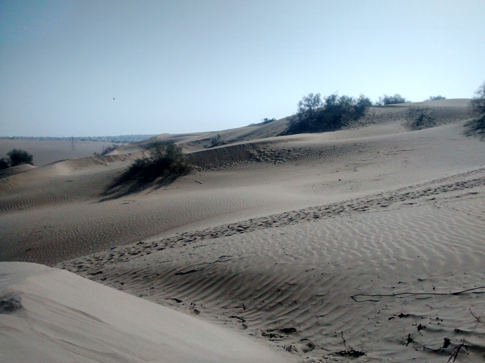
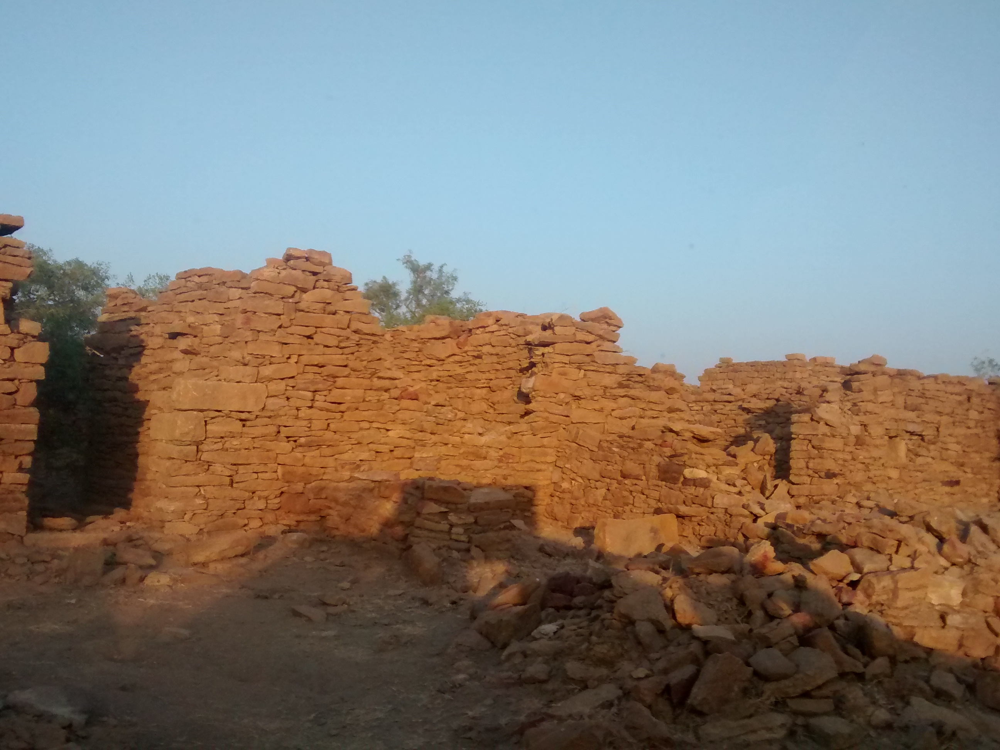
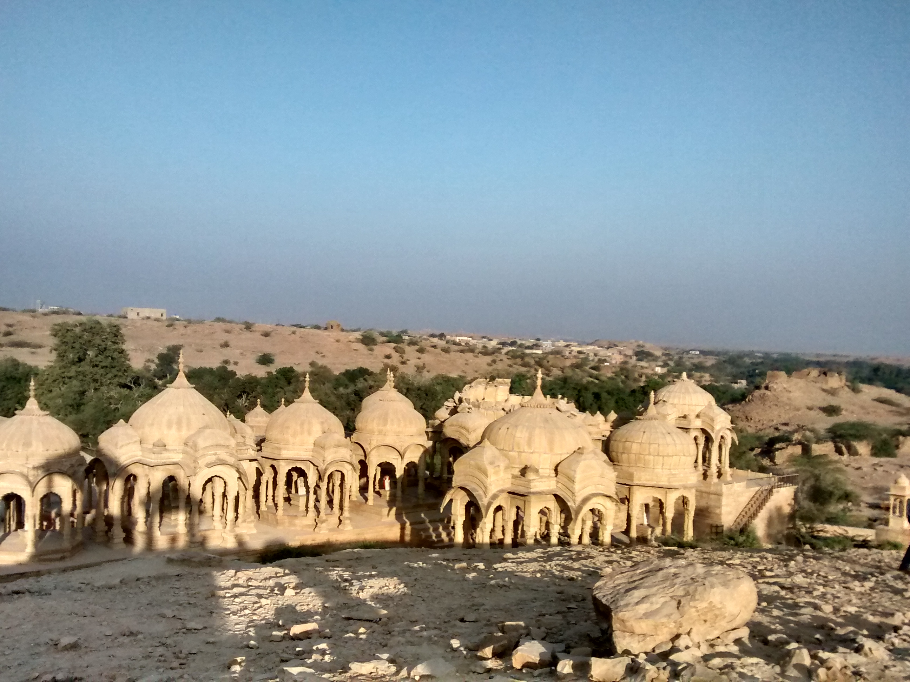
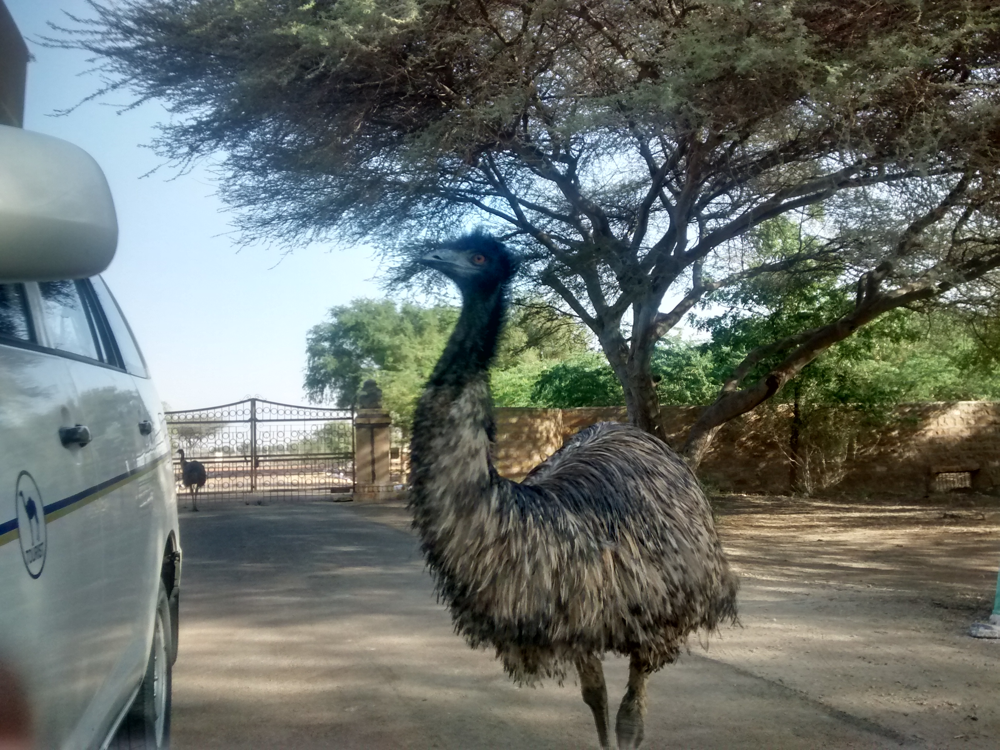

kumarAYUSH
kumarAYUSH
kumarAYUSH
kumarAYUSH
I went on a road trip to Jaisalmer with Anuj Shetty and Keshav Srinivasan. A central theme of the trip was 'ducking' and Keshav saying 'Peace!' in response to almost any opinion-based question thrown at him. First day was spent in Jodhpur, while the next three on the trip
They came. They brushed. They bathed. They ate. We departed for the Mehrangarh fort in Jodhpur.
Anuj: Keshav and I shared an audio guide which detailed the unique history of the fort, from the cannonball marks on the walls to the handprints of the widows of a long gone king. Being teenagers. we proceeded to obsess over the cannons and discuss the military tactics of the defenders of the fort, based on our numerous Age of Empires games. After enjoying the beautiful view of part of the city, shown in the panorama photo above, we went on to check out the rest of the attractions, including, but not limited to, a chroncally depressed old man who periodically put a non-functioning hookah pipe in his mouth for a living, and us scoffing at the pinnacle of ancient art because of our proficiency in Engineering Drawing.
Keshav: Peace!
The next feature on the trip was a Rajasthani Thali @Priya Hotel on Nayi Sadak.

Anuj: I don't know dude. Uhh..filling, majestic. I don't know. Don't just type everything I say
Keshav: I was the only one to finish it.
Next we went to the famous Ghantaghar market and up the Ghantagar( Clock Tower ). We sat there for half an hour listening to songs, just chilling out, watching people, making deductions and comments on their lives. Also, throughout the climb we had to duck to fit in the doors. That also goes for the fort. We could easily reach out to the face of the clock.

Keshav: Top secret ( when asked about comments on this )
We finished with Umed Palace, random walk through Sardarpura and a Pizza at Innings.
Morning we leave for Jaisalmer. We stop at Osian for a spicy pakoda breakfast and tea, and then at Khichan, Phalodi.
That was to pay a visit to Demoiselle cranes, who migrate to India from central Eurasia;Mongolia to be specific.

Anuj: You can't call them bird brains if they just stare at us. They are as smart as us, actually. We are doing the same.
Keshav took photos on his phone via my binoculars. The males have a black beard, the females a paintjob of black on the neck and the kids a white patch on the head. There's a guy who takes care of these birds; feeding, healing et cetera. His name is Sewa Ram. He also got many awards for his contribution to nature conservation.
We slept through the way until we reach Jaisalmer. After we had lunch at Chandan Shree Restaurant on Hanuman Chowk, and then went to take a look at Patwa Haveli. Going through the Haveli, we found our way to the top with a mesmerizing view of the city.
Keshav: I just felt like playing chess there. It was an amazing city view. We already took panaromas, but playing chess on my phone in the background of a city is something I could never do again.
And so he played a game of chess before we left, I swear.
We went to Gadisar lake, and then left for a resort in Kuhri where we would spend our night skywatching. The skywatching part was majestic. We were esentially in the middle of the desert, so the light pollution was minimum. A waning gibbous moon caused a bit of a distress but it was all too beautiful overall. I bet if people looked at stars everyday they'd be different. This one's from Calvin and Hobbes by the way. There was a cultural dance and local food for dinner. And we saw the sunset from sanddunes, after a humping ride with the camels. Me and Keshav went on Babloo while Anuj had Captain.

Keshav: Firstly the dance was super awkward since we were the only ones at the resort. But finally we managed to escape, and got to skywatching which we looked forward to. We sat and talked there about life, universe and everything until the sky turned and new objects rose.
Anuj: After witnessing the dexterity of a couple of 'kartal' players, trying my hands at it and realizing I was worse at it than using chopsticks. Ayush regailed us with a lot of Greek myths behind the naming and positions of the constellations. Then we were chilling, literally, talking more deeply about life than you can get from a Truth n' Dare game.
We move towards Tanot. Legend has it that the bombs dropped in the Tanot Mandir during 1965 Indo-Pak war didn't explode due to the divine influence of Tanot Mata. The bombs now add to the decoration of temple along with a BSF Batallion which maintains it. This is the road which gives you the true feeling of a road trip. I can count the number of tourist troops that visit the place in a day on my hand. It's far out from any reasonable civilization. The only way to describe the visceral thrill of being the only human beings as far as our sight goes is to have you experience it. No words can own it.

We passed by the Ghantiyali Mata Mandir where we stopped to climb upon a sanddune all on foot. That's where the real fun is, and not amongst resorts and camel safaris. And you don't need to guess what we did sitting on the top of it. We chilled and listened to songs, that's the thing.
Keshav: Much dry, such empty.
Anuj: Even with the burning sun on our backs, it still felt exhilarating to gaze around into the emptiness. There's a Nietzche quote, "When you gaze too long into the abyss, the abyss also gazes back into you"
And then the real fun began. We got permission to go to a border point just 15 km from Tanot Mata Mandir. BP 609! No cameras allowed.
Keshav: Our border is more fortified, lights,current in fences and all. Their side is totally bare.
Anuj: It was pretty cool to talk to the soldier on top of the border post who had a gun aimed on the other side of the border, constantly. I am pretty sure we brightened the soldier's day too. We also saw a fox on the way, even though the region was desolate.
We return to Jaisalmer, visit the fort in the evening. It is one of the few inhabited forts, so it was pretty good. Our guide Ravi Gopa was amazingly talkative and sharp about Indian History. We had juice on Gopa Chowk and then left for our residence in Dak Bungalow. We took a bath after two days and then went for dinner.
We went to Kuldhara early morning. Legend: A nobleman Salim Singh wanted to marry a girl from the village of Kuldhara. He warned that he would bring destruction over the whole village if they don't agree. The whole village was evacuated in one night, leaving homes with no sign of life. Till date, no one knows where did the people of Kuldhara go?

Next we went to Badabag, a set of monuments each built in memory of one of the kings . They still have festivals there.

Next in line was Akal Wood Fossils Park. 10-15 people visit it in a month. But if you see a fort because it's old, you should see these fossils as they are over 100 million years old. We picked a few pieces lying around. But probably the best part was the welcome comittee at the park. A set of three emus just wandering around the main entrance. They were quite friendly, and maybe a bit scary at first glance too. Check out the Great Emu War that happened in Australia. At least the Wikipedia on it is hilarious.

We returned to Jodhpur after it. We had lunch at DPS dhaba, and then back to home.